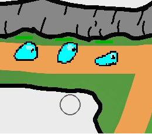
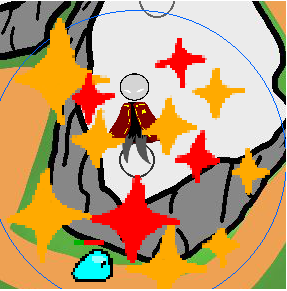
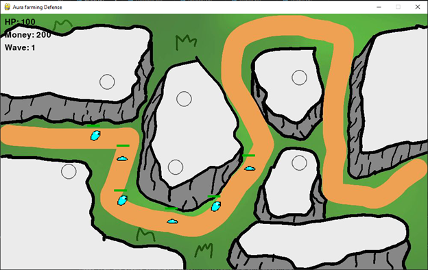
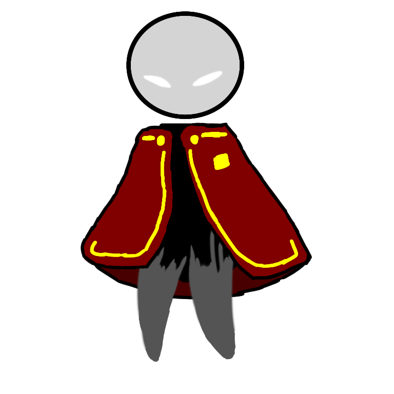
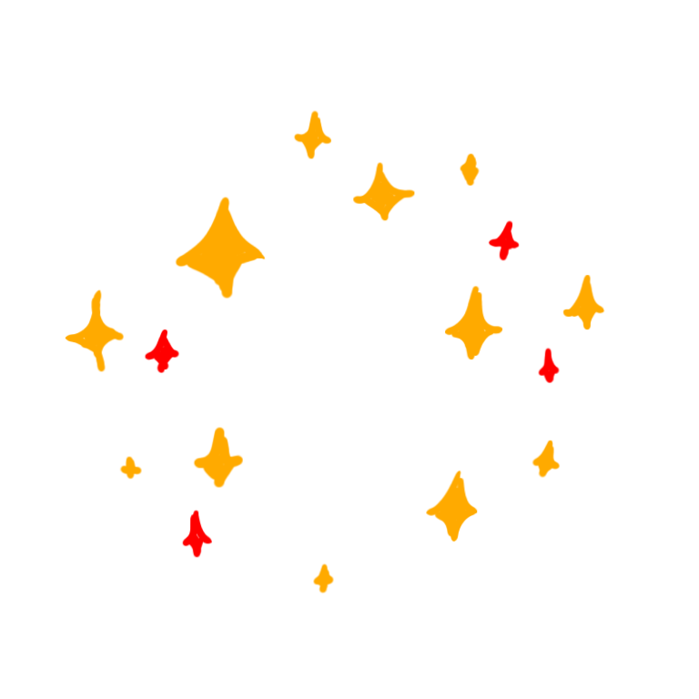
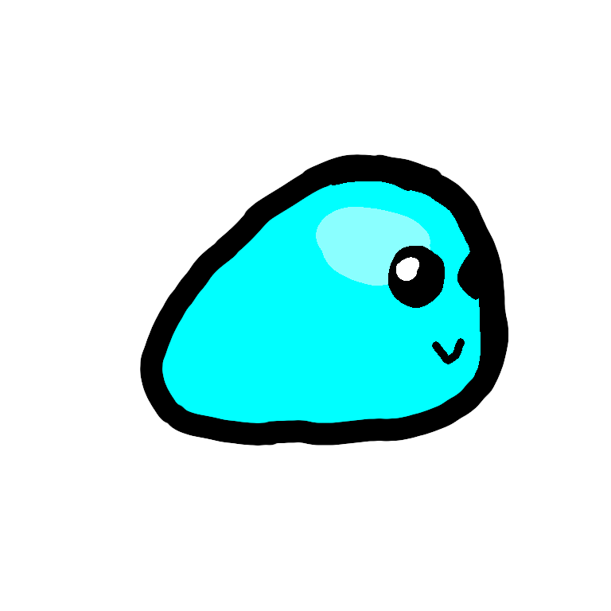
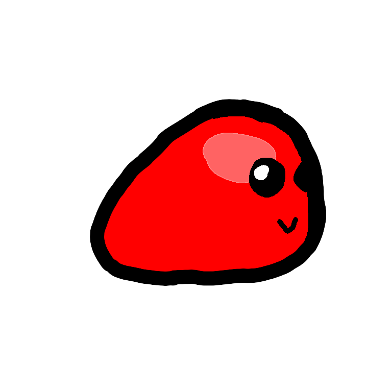
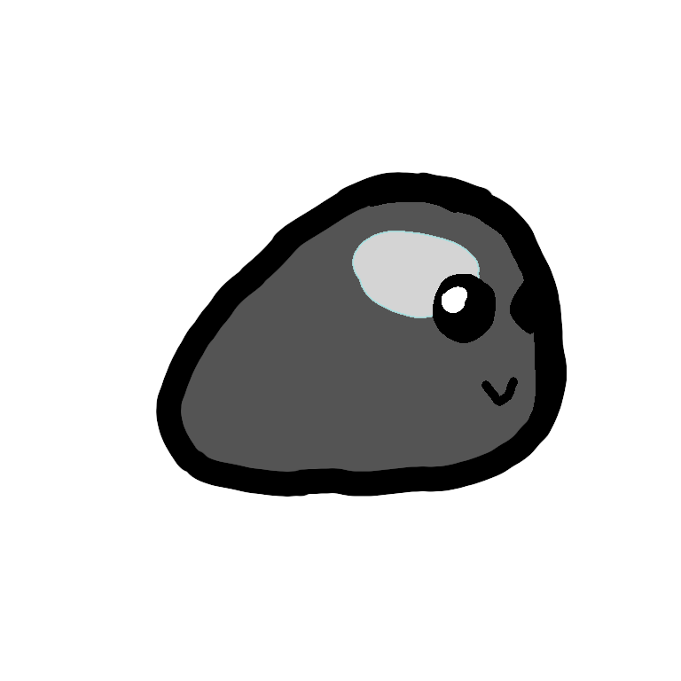
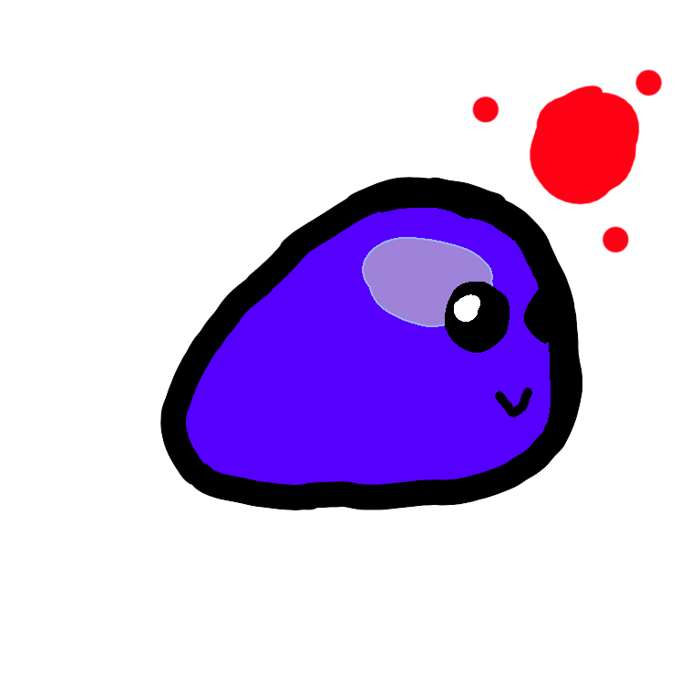

The Discovery of Aura
Aura was once a harmless energy found deep within nature. It enhanced growth, strength, and life itself. Early farmers began harnessing it to increase their harvest beyond natural limits.

Slimes

Aura farmer(defender)

Map

Aura Farmer

Aura

Slime

Fast Slime

Tank Slime

Boss Slime
Smooth gameplay system.
Progress system.
Increasing difficulty.
Enemy has different types(normal, fast, tank, boss)
In Aura Farming Defense, the world is overwhelmed by an unstoppable force known as aura.
A mysterious Aura Farmer has accumulated so much energy that it destabilizes the very atmosphere itself,
triggering massive explosions and environmental collapse.
As a defender, your mission is to contain the chaos. Build and upgrade your defenses, manage resources,
and survive increasingly intense waves caused by the uncontrolled aura surges. Every decision matters
as the balance between power and destruction continues to spiral out of control.
Aura was once a harmless energy found deep within nature. It enhanced growth, strength, and life itself. Early farmers began harnessing it to increase their harvest beyond natural limits.
One individual pushed aura usage beyond safe limits. Known only as the Aura Farmer, they accumulated massive amounts of energy, far beyond what the environment could handle.
The overwhelming aura destabilized the atmosphere. Energy surges caused violent reactions, leading to massive explosions and environmental destruction across the world.
Uncontrolled aura began forming into waves of energy. These waves manifest as enemies, constantly attacking anything in their path.
You are one of the last defenders. Build your defenses, manage resources, and survive endless waves as the world fights back against total collapse.
Programmer
Game Designer
Systems Developer
Bio:
Passionate solo developer building Aura Farming Defense using Python, Pygame, and web tools.
Focused on gameplay mechanics, animations, and tower defense systems.